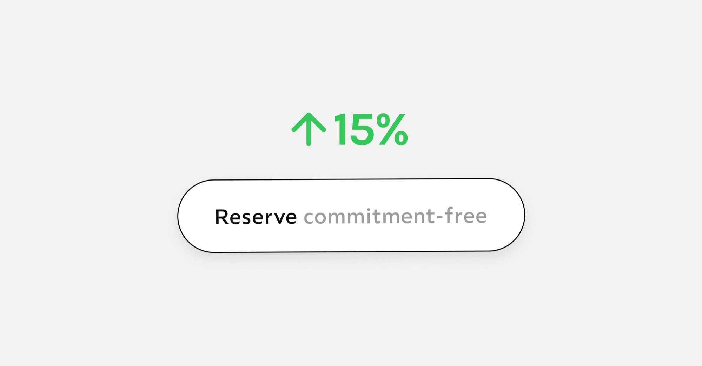
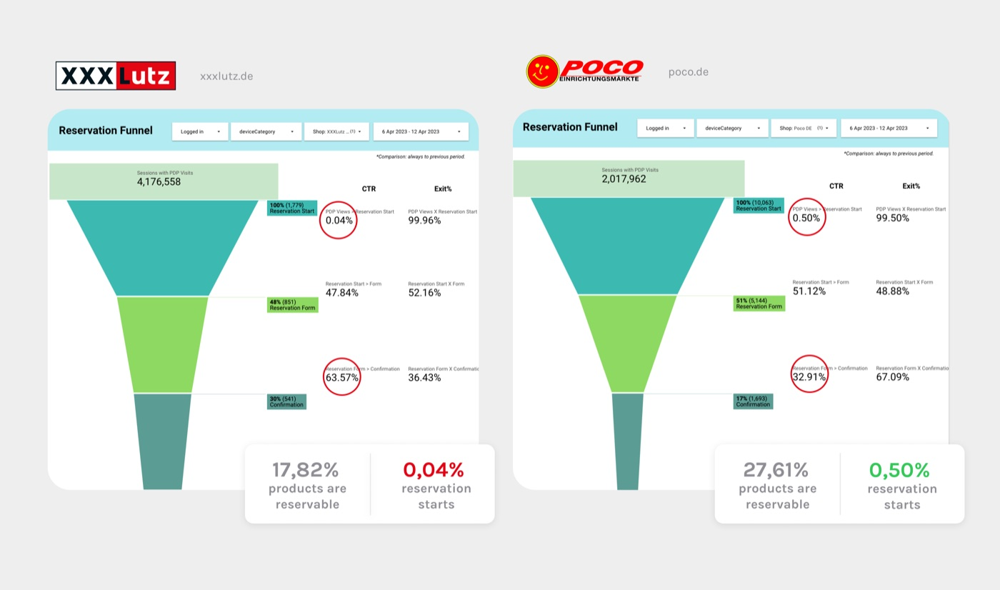
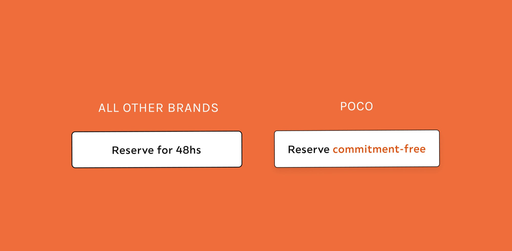
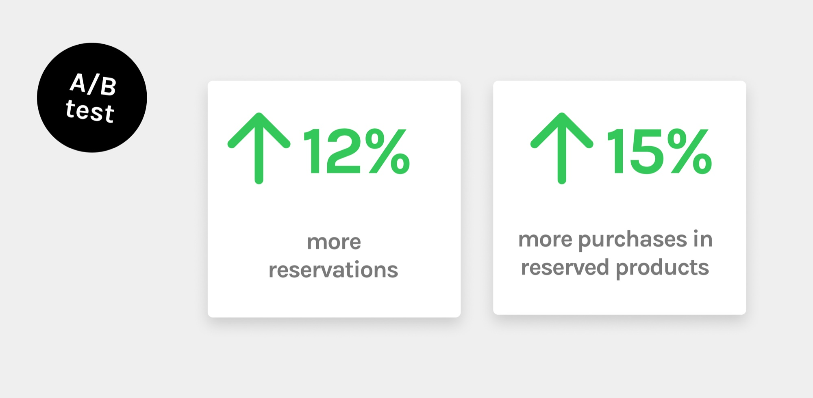

Sometimes the biggest product opportunities are hidden in a single button.
At XXXLutz, I was analyzing the reservation flow across different brands. The service was simple: users could reserve a product online without paying anything, then had between 48 and 72 hours to visit the store, see the product, and decide whether to buy it.
One brand immediately stood out. POCO - literally “little” in Spanish - was producing by far the biggest reservation numbers.
We looked at the obvious explanations: more stores offered reservations, more products were eligible for reservation, and the service was promoted more. So far, nothing surprising.

Do our users have commitment issues?
But while comparing the different implementations, I noticed a tiny difference. The “Reserve” button was different. In POCO, it said “Reserve without obligation.”

What? Could it be that our users have commitment issues like Chandler from Friends? Did the freedom from commitment make reserving feel exciting rather than restrictive?
Testing the hypothesis
We quickly ran an A/B test, replacing the standard wording in our German shop with “Reserve without obligation.”
The results surprised everyone. There were 12% more clicks on the initial CTA. Even more surprisingly, 15% more users actually went to the store and bought the product.
Adding one word reduced the pressure enough for thousands of users to feel motivated to take the first step.

Why it mattered
This experiment became my favorite example when talking to leadership about UX Writing. It showed that words are not decoration. They shape expectations, influence trust, and sometimes unlock measurable business impact.
It was a one-story implementation that had a direct impact on revenue.
In the end, changing a button is rarely the story. Understanding why that button matters is.